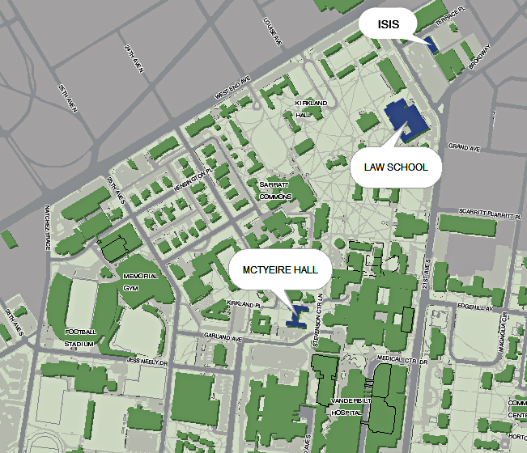

Venue
DEBS 09 will be hosted in Vanderbilt University Law School, Renaissance room 036.
Vanderbilt University Law School
131 21st Ave. South
Hyatt Room 144
Nashville, TN 37203-1181
About Nashville
: For more information about Nashville and a list of restaurants and things to do while visiting go here.
Directions:
You can Google directions from your hotel by going here.
Housing
: We have 90 rooms available. Rooms are $22 per night plus a $2.50 per night Metro Nashville Tax and $4 per night for linen. Price does not cover parking, meals, shuttles, etc. Please note that there is a $50.00 fee for lost room key and $25.00 for a lost card. Any fees incurred will be charged to you via your RegOnline information.
Shuttle Information
: Shuttle service is available from the airport to Vanderbilt. Trip cost is approximately $18.00 round trip and return pickup is available directly from Mc Tyeire Hall. (This option is for people who want to stay in housing.) Go to http://www.inshuttle.com for more details.
Hotel
: You can see hotels in the area if you go here or by selecting one of hotels listed below.
Courtyard by Marriott
1901 West End Avenue (1/3 mile from law school)
Toll-free 800-245-1959; local 615-327-9900
Embassy Suites
1811 Broadway (1/3 mile from law school)
Toll-free 800-EMBASSY; local 615-320-8899
Hampton Inn & Suites
2330 Elliston Place (1/3 mile from law school)
Toll-free 888-880-5395; local 615-320-6060
Hampton Inn Vanderbilt
1919 West End Avenue (1/4 mile law school)
Toll-free 888-880-5394; local 615-329-1144
Hermitage Hotel
231 6th Avenue North (downtown Nashville, the only five-star hotel in TN, 2 miles from law school)
Toll-free 888-888-9414; local 615-244-3121
Hilton Nashville Downtown
121 4th Avenue South (downtown Nashville, 2 miles from law school)
Toll-free 800-HILTONS; local 615-620-1000
Holiday Inn Select
2613 West End Avenue (2/3 mile from law school)
Toll-free 800-448-2296; local 615-327-4707
Hotel Indigo
1719 West End Avenue (3/4 mile from law school)
Toll-free 888-444-0401; local 615-329-4200
Nashville Marriott at Vanderbilt
2555 West End Avenue (2/3 mile from law school)
Toll-free 800-336-3335; local 615-321-1300
Loews Vanderbilt Hotel
2100 West End Avenue (1 block from law school)
Toll-free 800-336-3335; local 615-320-1700
For a full hotel list visit the VULS visitors page.
Maps
of the area are below.

View Larger Map